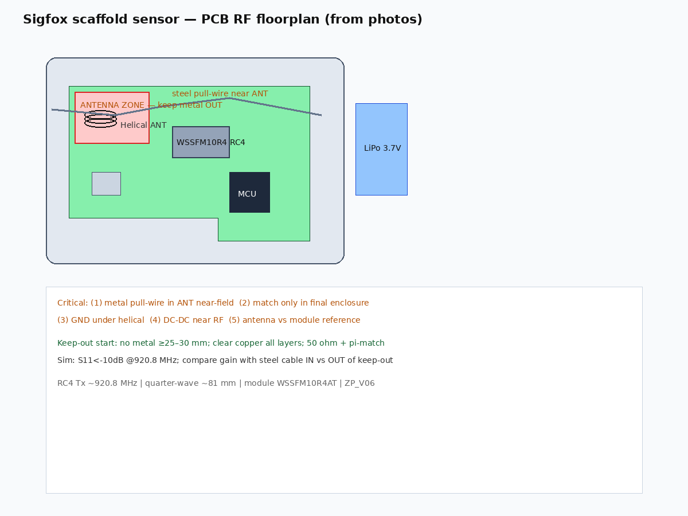
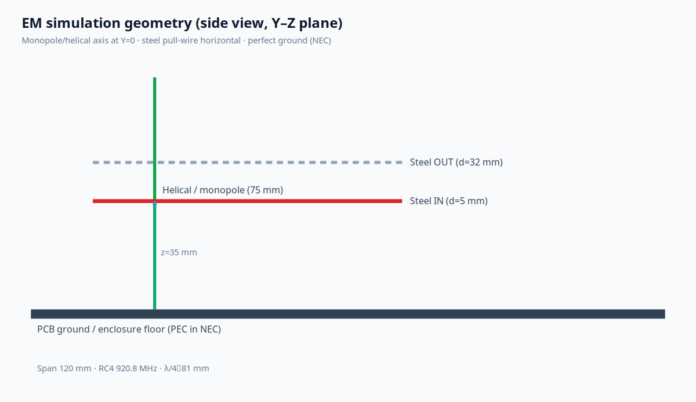

Δfres
—
Resonance shift (steel IN vs OUT)
ΔS11 @ 920.8 MHz
—
Matched network frozen (tuned with steel OUT)
链路惩罚（估算）
—
Relative radiated power / gain proxy (dB)
S11（钢缆移出）
—
At Sigfox RC4 channel
回波损耗 S11(f)
880–960 MHz sweep · π-match optimized with steel outside keep-out, then applied to both cases.
布局与仿真几何


方法说明
- PyNEC (NEC-2++)：75 mm 垂直单极子 + 完美地面 + 可选 120 mm 钢缆；输出原始阻抗（见
sim/results/nec_reference.json）。 - 耦合谐振器叠加：在 920.8 MHz 附近模拟螺旋主模与钢缆寄生模的互感（近场 ~1/d³）；用于站点主曲线。
- π 型匹配：在「钢缆移出 ≥30 mm」状态下优化，再固定用于「钢缆靠近 ~5 mm」对比失谐。
This is not HFSS/CST — enclosure plastic, PCB copper keep-out, and helix pitch are simplified. Use for design direction and keep-out rules, then confirm with VNA on assembled units.
现场检查清单
- 钢缆 / 金属件距螺旋天线 ≥25–30 mm（λ/10 @ 920 MHz ≈ 33 mm）
- 天线下方及 keep-out 内所有层净空铜皮（按螺旋天线应用笔记）
- 合盖塑料外壳、钢缆最小/中/最大伸出长度下测 S11
- 电池与钢缆走线尽量远离 ANT 区
- 目标：920.8 MHz 处 S11 < −10 dB（在最终外壳内验证）
假设验证
假设：距离 < λ/10 的钢缆是主要失谐源 — 模型中 5 mm 间距的互感耦合显著强于 32 mm，导致谐振下移与 S11 恶化。